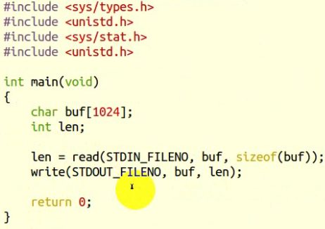

标准输入、输出

gcc main.c --->main.out
在终端输入，然后在终端输出
阻塞和非阻塞
阻塞读终端
#include <unistd.h> #include <stdlib.h>
int main(void)
{
char buf[10];
int n;
n = read(STDIN_FILENO, buf, 10);
if (n < 0)
{
perror("read STDIN_FILENO");
exit(1);
}
write(STDOUT_FILENO, buf, n); return 0;
}
非阻塞读终端
#include <unistd.h>
#include <fcntl.h>
#include <errno.h>
#include <string.h>
#include <stdlib.h>
#define MSG_TRY "try again\n"
int main(void)
{
char buf[10];
int fd, n;
fd = open("/dev/tty", O_RDONLY|O_NONBLOCK); //把终端设置为非阻塞
if(fd<0)
{
perror("open /dev/tty");
exit(1);
}
tryagain:
n = read(fd, buf, 10);
if (n < 0)
{
if (errno == EAGAIN)
{
sleep(1);
write(STDOUT_FILENO, MSG_TRY, strlen(MSG_TRY)); //打印一段话
goto tryagain;
}
perror("read /dev/tty");
exit(1);
}
write(STDOUT_FILENO, buf, n);
close(fd);
return 0;
}
-----------------------------------------------------------------------------------------------------------------------------------------
#include <errno.h>
errno 会得到相应错误对应的值

报错：xingwenpeng : 错误原因
perror()
char* strerr(int errnum) // #include <string.h>

报错：xwp : 错误原因
--------------------------------------------------------------------------------------------------------------------------------------
lseek
lseek和标准I/O库的fseek函数类似，可以移动当前读写位置（或者叫偏移量）
off_t lseek(int fd, off_t offset, int whencd); //whencd：当前位置(SEEK_SET/SEEK_CUR/SEEK_END)
off_t currpos;
currpos = lseek(fd, 0, SEEK_CUR);
lseek成功时返回当前（新的）偏移量失败时返回-1
这种方法也可用来确定文件或设备是否可以设置偏移量，常规文件都可以设置偏移量，
而设备一般是不可以设置偏移量的。如果设备不支持lseek，则lseek返回-1，并将errno 设置为ESPIPE。

abc文件大小为：4097
用lseek返回一个文件的大小

fcntl
先前我们以read终端设备为例介绍了非阻塞I/O，为什么我们不直接对STDIN_FILENO做非阻塞read，
而要重新open一遍/dev/tty呢？
因为STDIN_FILENO在程序启动时已经被自动 打开了，而我们需要在调用open时指定O_NONBLOCK标志。
这里介绍另外一种办法，可以用 fcntl函数改变一个已打开的文件的属性，
可以重新设置读、写、追加、非阻塞等标志（这 些标志称为File Status Flag），而不必重新open文件。
#include <unistd.h>
#include <fcntl.h>
int fcntl(int fd, int cmd);
int fcntl(int fd, int cmd, long arg);
int fcntl(int fd, int cmd, struct flock *lock);
用fcntl改变File Status Flag
#include <unistd.h>
#include <fcntl.h>
#include <errno.h>
#include <string.h>
#include <stdlib.h>
#define MSG_TRY "try again\n"
int main(void)
{
char buf[10];
int n;
int flags;
flags = fcntl(STDIN_FILENO, F_GETFL); //获取一个标志(访问控制属性)给flags
flags |= O_NONBLOCK; //或一个非阻塞
if (fcntl(STDIN_FILENO, F_SETFL, flags) == -1) //设置成flags
{
perror("fcntl");
exit(1);
}
tryagain:
n = read(STDIN_FILENO, buf, 10);
if (n < 0)
{
if (errno == EAGAIN)
{
sleep(1);
write(STDOUT_FILENO, MSG_TRY, strlen(MSG_TRY));
goto tryagain;
}
perror("read stdin");
exit(1);
}
write(STDOUT_FILENO, buf, n);
return 0;
}

ioctl
ioctl用于向设备发控制和配置命令，有些命令也需要读写一些数据，但这些数据是 不能用read/write读写的，称为Out-of-band数据。
也就是说，read/write读写的数据是 in-band数据，是I/O操作的主体，而ioctl命令传送的是控制信息，其中的数据是辅助的数据。
例如，在串口线上收发数据通过read/write操作，而串口的波特率、校验位、停止位通 过ioctl设置，
A/D转换的结果通过read读取，而A/D转换的精度和工作频率通过ioctl设置。
#include <sys/ioctl.h>
int ioctl(int d, int request, ...);

#include <stdio.h>
#include <stdlib.h>
#include <unistd.h>
#include <sys/ioctl.h>
int main(void)
{
struct winsize size; //终端大小
if (isatty(STDOUT_FILENO) == 0) //判断是否是一个终端文件
exit(1);
if(ioctl(STDOUT_FILENO, TIOCGWINSZ, &size)<0) //获取终端窗口大小，存放到size
{
perror("ioctl TIOCGWINSZ error");
exit(1);
}
printf("%d rows, %d columns\n", size.ws_row, size.ws_col);
return 0;
}